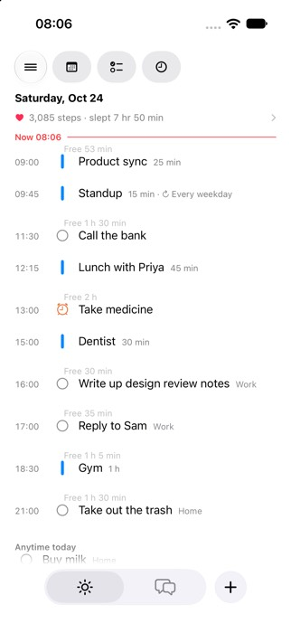
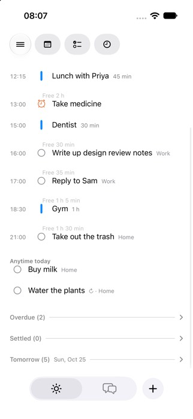
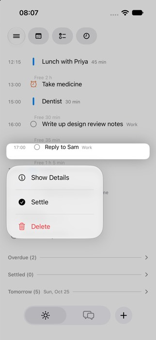
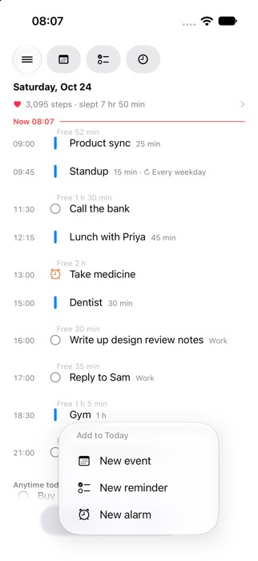
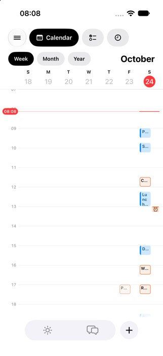
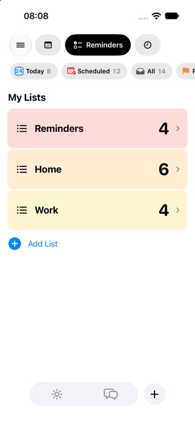
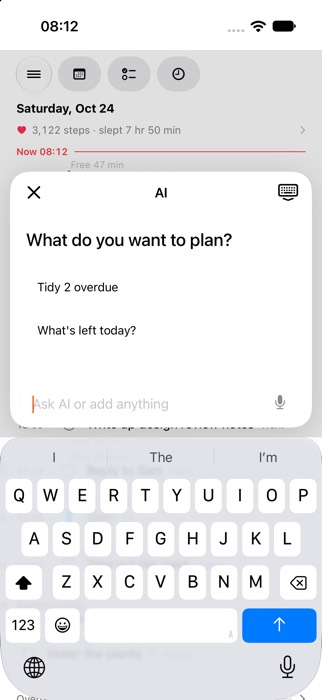
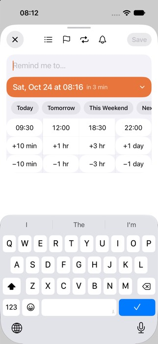
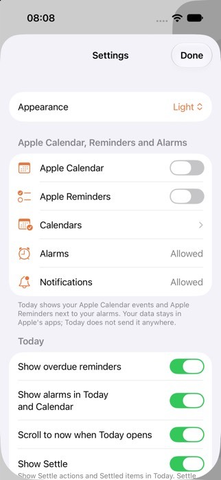

结论：推荐方向 B「一个输入框」，分两步走。第一步先做方向 A 里风险最低的一块：Today 的行补上“今天 / 明天 / 选日期”，逾期移到顶部，加一键整理。这一块只改 Today 一个功能区，不动数据结构和同步。10 个常用任务的总点击：现状 33，A 23，B 18（约少 45%）；需要用户做的决策：9 → 4 → 1。C 的点击数和 B 一样，但要拆掉 Apple 式的 Week 网格和 Clock tab，违背“先对齐 Apple 再超越”的路线，所以不推荐现在做。
怎么算：从冷启动的 Today tab 开始。一次点按、长按或滑动各算 1 次点击；打字算 0 次（但要输入的地方都写明了）；“决策”指用户必须选路径、类型、地点或时间的地方。现状的数字是在模拟器上按测试数据走出来的（Today-UIUX，iOS 27.0）；A/B/C 的数字是按 mockup 估的。
| 任务 | 现状 点击 / 决策 | A 整理 点击 / 决策 | B 一个输入框 点击 / 决策 | C 一条时间线 点击 / 决策 | 说明 |
|---|---|---|---|---|---|
| 看今天接下来是什么 | 0 / 0 | 0 / 0 | 0 / 0 | 0 / 0 | 打开就是 Today，自动滚到现在 |
| 加一个带时间的提醒 | 4 / 2 | 3 / 1 | 2 / 0 | 2 / 0 | 现状：Today 页点 + 先弹类型菜单 → New reminder → 时间格 → Save；Chat 也能做，要先在两条路之间选 |
| 改期 / 推迟 | 3 / 2 | 2 / 1 | 2 / 1 | 2 / 1 | 现状：Today 的长按菜单只有 详情 / Settle / 删除，所以要点开编辑器 → +1 day → Save；Snooze 和 Settle 只是藏起来，日期不变 |
| 完成 | 1 / 0 | 1 / 0 | 1 / 0 | 1 / 0 | 点圆圈，已经是最短 |
| 加一个日程 | 6 / 2 | 6 / 1 | 3 / 0 | 3 / 0 | Apple 编辑器：标题、开始时间、结束时间、添加。B/C：一句话 + 预览卡上的“添加” |
| 设闹钟 | 4 / 1 | 4 / 1 | 3 / 0 | 3 / 0 | 现状：+ 菜单 → New alarm → 滚轮 → Save（闹钟编辑器正在 fix/alarm-wheel-jank 返工，这里不动） |
| 问 AI | 2 / 0 | 2 / 0 | 2 / 0 | 2 / 0 | Chat → 输入 → 发送 |
| 找一个东西 | 3 / 0 | 2 / 0 | 2 / 0 | 2 / 0 | 现状：☰ → 🔍 → 结果，搜索藏在侧栏 |
| 看明天 | 2 / 0 | 1 / 0 | 1 / 0 | 1 / 0 | 现状：滚到底 → 展开 Tomorrow 折叠区 |
| 处理逾期（测试数据 2 条） | 8 / 2 | 2 / 0 | 2 / 0 | 2 / 0 | 现状：滚到底 → 展开 Overdue → 每条：点开 → +1 day → Save。Chat 的 “Tidy 2 overdue” 建议是 3 步，但只出现在 Chat 页里 |
| 合计（点击 / 决策） | 33 / 9 | 23 / 4 | 18 / 1 | 18 / 1 | |
| 顶层地点（tab + 侧栏入口 + 面板） | 8 | 8 | 7 | 5 | |
| “今天”出现的地方 | 3 | 3 | 3 | 1 | |
| 新建提醒的界面 | 4 | 2 | 2 | 2 | |
| Settings 里的用户选择 | ≈37 | ≈20 | ≈19 | ≈16 | |
| 同名不同义的“Snooze” | 3 | 2 | 2 | 2 |









DayAgenda.attention：它是替换了标准菜单，而不是在标准菜单上追加。showsWeekStrip 时渲染，而 Today 传的是 false，所以它是死代码。整理逾期只能在 Chat 里用。另外 Settings 里还能把逾期整个关掉，和原则 6 冲突。FeatureToday/DayAgenda.swift、TodayPlannerUI/Rows.swift 和 Ask 的入口参数，不碰数据结构、同步和闹钟编辑器。效果：“改期”3 次 → 2 次，“处理逾期”8 次 → 2 次。报告全文：docs/research/uiux-overhaul-20261024.md